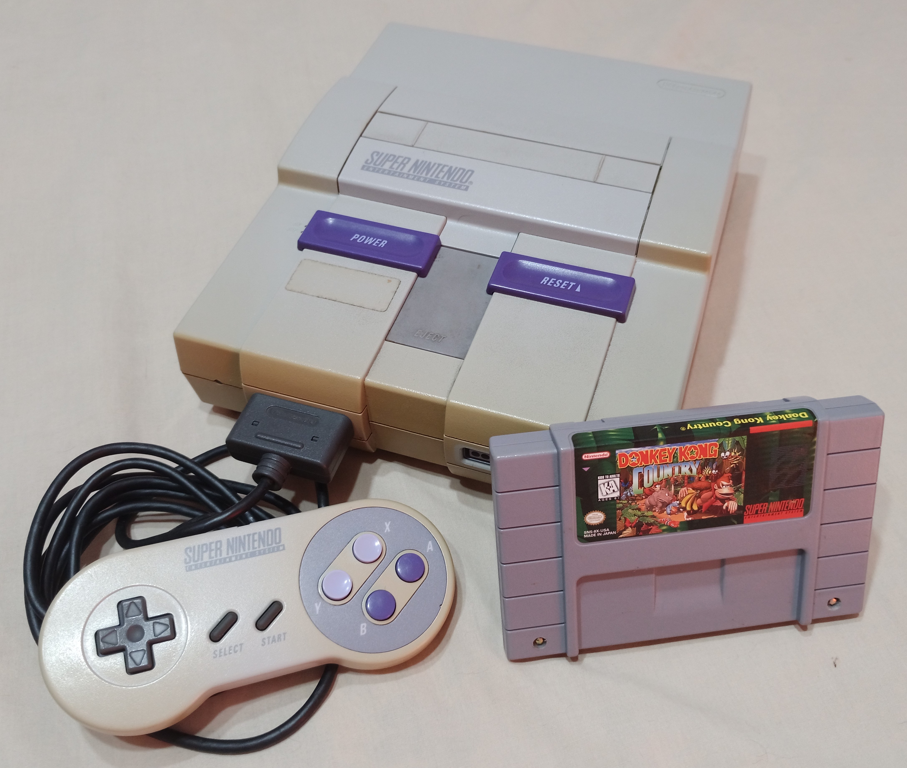

Quando se fala de videogames, não dá para deixar de fora a pioneira no assunto, a Nintendo. Uma empresa familiar fundada por Hiroshi Yamauchi, que em meados de 1983 literalmente conquistou e popularizou o mundo dos videogames com o seu console, o Famicom (console de segunda geração, 16 bits de processamento) que saindo da sua terra natal, Japão, rumo ao ocidente se chamou de Nintendo.
A Nintendo sob a “dinastia” do Hiroshi Yamauchi, conquistou praticamente todos os lares com o entretenimento eletrônico, os videos games. Esse feito não foi por acaso, pois Hiroshi Yamauchi era conhecido por sua cobrança, rigidez e inflexibilidade e para com os seus desenvolvedores. Quem quisesse fabricar e trabalhar com videogames tinha que passar e se sujeitar, se curvar, variar ao sabor da dona do console naquela época, a Nintendo. Do contrário, estava fora do mercado dos games.
O império dos videos jogos viveu à sombra da Nintendo por mais ou menos uma década. Isso não foi por acaso, todos -os que queriam trabalhar com games, claro- tinham que fabricar para a Nintendo e também comprar os seus cartuchos (o formato de mídia disponível da época) para gravação dos jogos, ou seja, escravidão/submissão total ao “japinha legal”. Isso reduzia os lucros dos desenvolvedores à pão e água. Realmente não era uma tarefa fácil sobreviver de lucros e trabalhar para o Yamauchi.
Por volta de 1994, para alívio dos desenvolvedores de jogos, os “ventos” do mercado de games mudaram. Nessa época nasceu o PlayStation, dlançado pela Sony para concorrer com a Nintendo. Mas isso é história para ser contada em outro artigo. Depois disso a Nintendo teve que se reinventar, mudar conceitos e formas de trabalhar. Pois nem com novos consoles sucessores SuperNintendo, N64,WI e WU, conseguiu concorrer com a recém chegada, a Sony.
Sem dúvida a Nintendo teve sua importância no mundo dos games, isso ninguém consegue negar. A história do mundo do entretenimento eletrônico foi escrita por muito tempo pela caneta nas mãos da Nintendo. Dá para se dizer que ela nos deu um ponta pé nos projetando para o futuro. Seus títulos são até hoje impressionantes em quantidade e diversão, são tantos que não dá para montar uma lista, muitos são aclamados nos dias atuais por uma legião de fãs e diversas gerações, ou seja, passou do avô para o pai, e do pai para o filho. Impressionante!
Yamauchi assumiu a Nintendo no início de 1950, a empresa foi fundada por Fusajiro Yamauchi, em 23 de setembro de 1889. Foi o grande responsável por transformar a empresa, que até então vendia cartas de baralho Hanafuda e outros tipos, na maior e mais lucrativa companhia de videogames do mundo.
